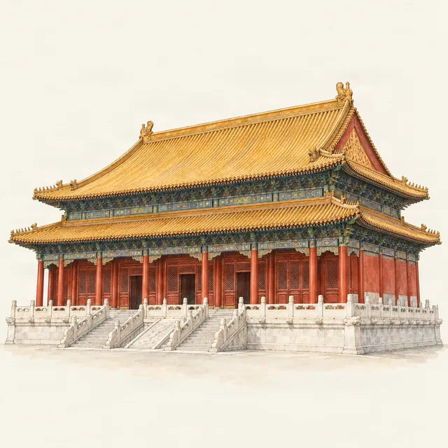

Forbidden City · seasons
The Forbidden City in winter and snow
Last checked:

Is the Forbidden City worth visiting in winter?
Yes. From November to March tickets drop to ¥40 from ¥60, crowds are thinner outside Chinese New Year, and on the few days a year that it snows, the red walls and yellow roofs under white are the most photographed sight in Beijing. The trade-off is cold: daytime temperatures in January are often around or below freezing, and almost all of the visit is outdoors.
What are the winter opening hours?
- 1 November – 31 March: 08:30–16:30, last entry 15:30.
- Treasure and Clock Galleries: last entry 15:40.
- Closed on Mondays, except public holidays.
With sunset around 17:00 in December, the light goes early. Start in the morning.
How often does it snow in Beijing?
Not often. Beijing winters are dry and sunny; snow falls on only a handful of days each winter, mostly between December and February, and it often melts within a day or two. You cannot plan a trip around it, but if snow is forecast while you are in town, book the next morning straight away.
What happens when it snows?
Everyone in Beijing has the same idea. Tickets for the first clear morning after snowfall sell out quickly, and photographers queue at the gate before opening. Some tips:
- Book at 20:00 seven days ahead for several possible dates, then cancel the ones you do not need before midnight the day before.
- Be at the Meridian Gate before the 08:30 opening; the untouched snow on the courtyards goes first.
- Stone steps and marble terraces are slippery. Wear shoes with grip.
- If you cannot get in, climb Jingshan Park for the view of the snow-covered roofs from Wanchun Pavilion; the park opens at 06:30.
- The moat by the northwest corner tower, outside the walls, is the classic snow photograph and needs no ticket.
Are the halls heated?
No. You look into the halls from their doorways, and the exhibition galleries are the only indoor spaces. The Clock Gallery and the Treasure Gallery (¥10 each) make good warm-up stops in the east of the palace. Food outlets are spread out: bring a hot drink in a flask and snacks.
What should I wear?
Dress for standing still outside: a warm coat, hat, gloves and thick-soled shoes, as the cold comes up from the stone paving. Phone batteries drain fast in the cold; keep yours in an inside pocket, especially if your ticket and maps are on it.
What about Chinese New Year?
The Spring Festival holiday, in late January or February, is the exception to quiet winter: it is one of the busiest times of the year, with tickets gone the moment they are released. See when not to visit.
How long do I need on a cold day?
Two to three hours is plenty in winter. Follow the central axis from the Meridian Gate to the Gate of Divine Might and add one gallery; the half-day route has the order. Penyola keeps the map, stories and audio on your phone, so you are not hunting for a signal with cold fingers.
More planning guides
- Forbidden City crowds and the best time to visit
- Forbidden City tickets for foreigners
- Jingshan Park: the best view of the Forbidden City
Sources
Checked on these official pages on 9 November 2026: